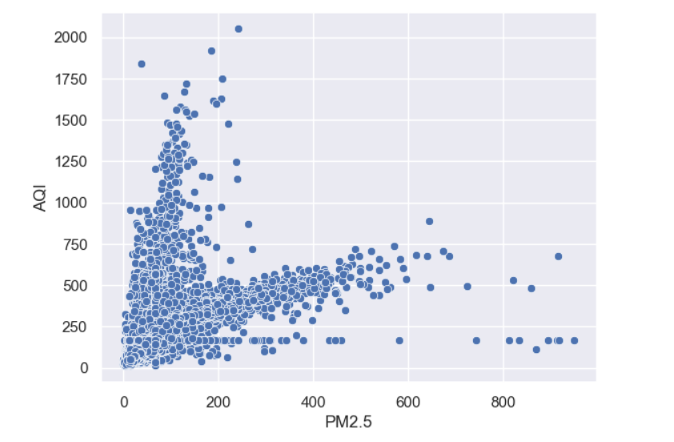
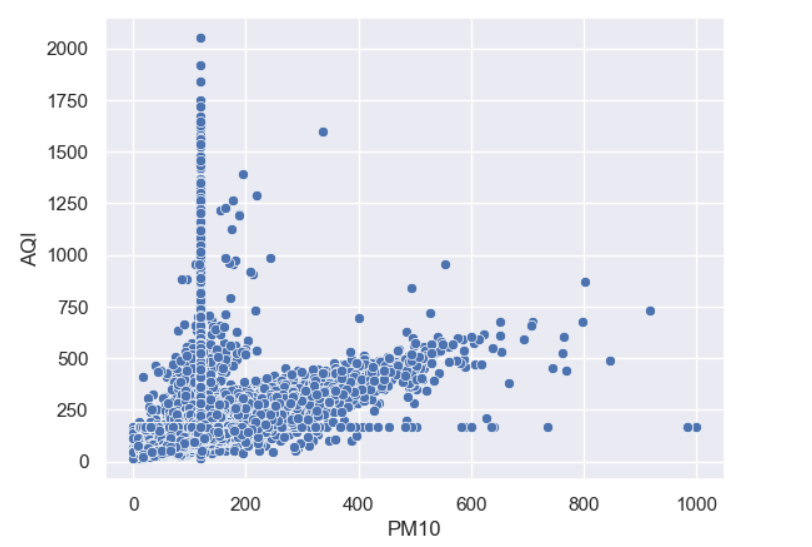
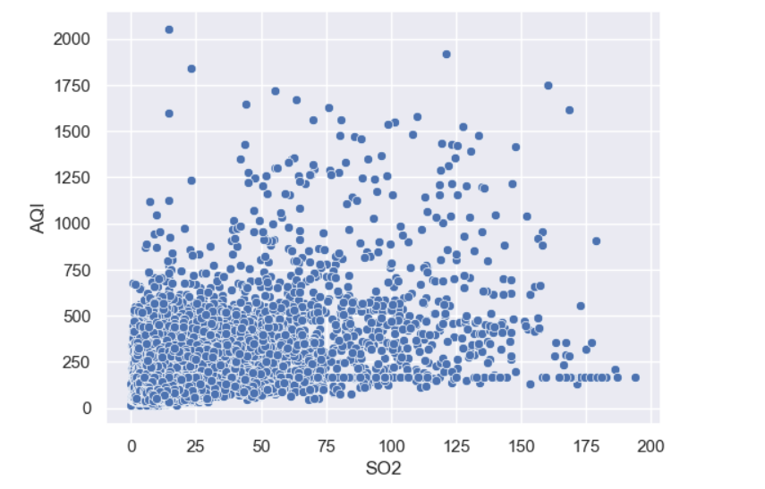
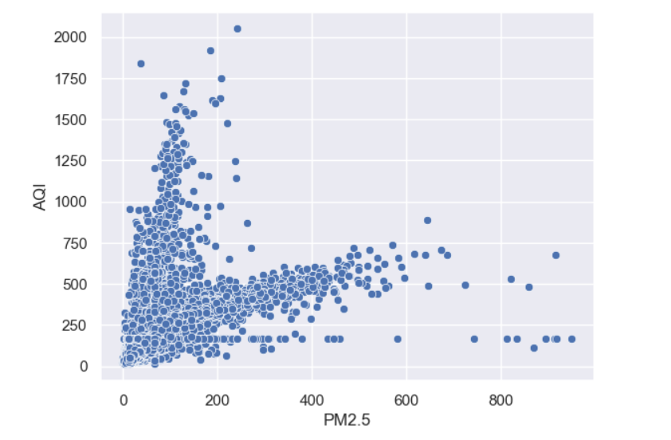
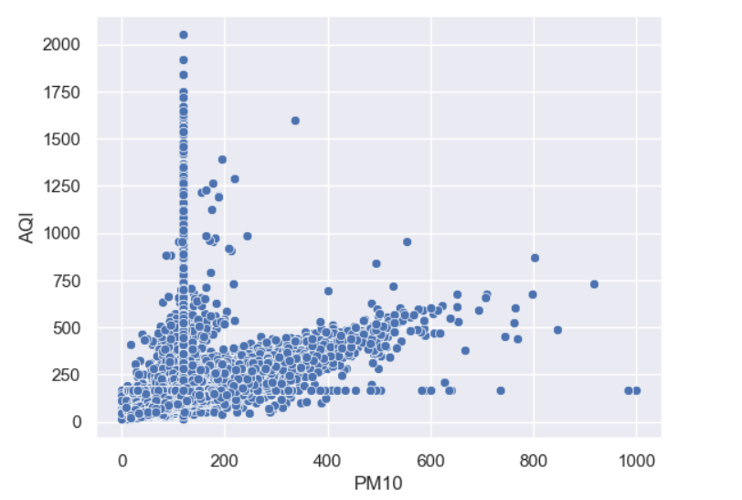
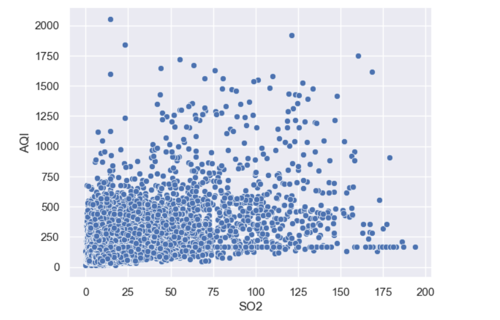

Air Pollution Prediction
Air pollution, with its deleterious effects on human health, ecosystems, and climate, presents a critical environmental challenge. This challenge is exacerbated by pollutants such as ozone (O3), nitrogen dioxide (NO2), and particulate matter (PM2.5 and PM10), which are indicative of the quality of the air we breathe. In addressing this pervasive issue, our project has pioneered the development of an advanced Air Quality Index (AQI) prediction system. This innovative tool is engineered to accurately forecast AQI levels by analyzing a spectrum of air components, thereby enabling a proactive response to air quality deterioration.
The core of our initiative involved the rigorous development and evaluation of three predictive models: Decision Tree, Linear Regression, and Random Forest. Through a comprehensive comparative analysis, we identified the model that exhibited unparalleled predictive accuracy and reliability in estimating AQI values. This selected model forms the foundation of our AQI prediction tool, offering a strategic advantage for health advisories, policy formulation, and environmental management efforts. By equipping stakeholders with precise AQI predictions, our project stands as a testament to the power of technological innovation in combating the adverse effects of air pollution and safeguarding public health and the environment.
Click one of the buttons below to predict Air Quality Index:
Predict Manually Predict Automatically Models heatmap

 




